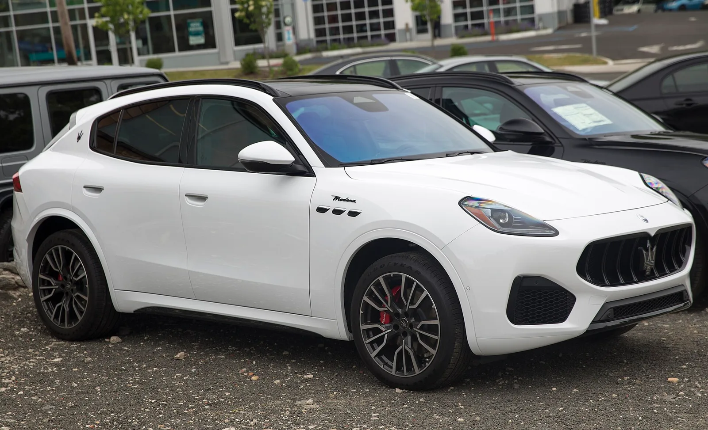
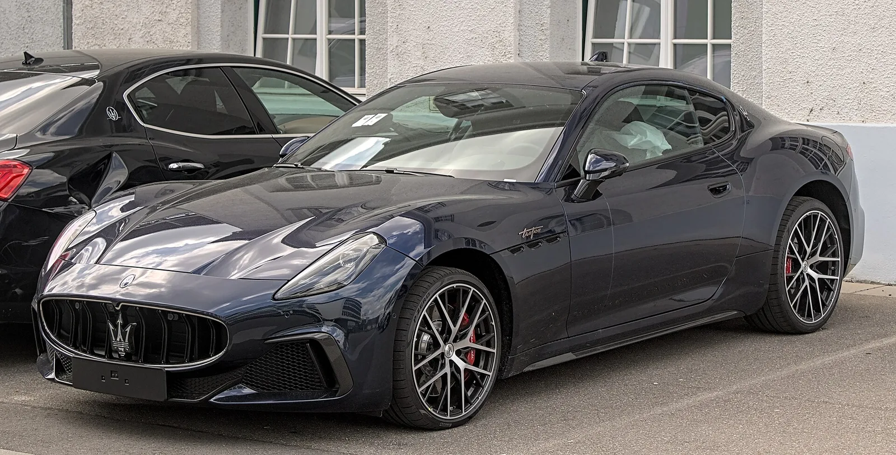

▲ 마세라티 그레칼레 트로페오. 마세라티는 2025년 전 세계 판매량이 8,000대 밑으로 떨어지며 10년 만에 최악의 성적표를 받았다 ⓒ Wikimedia Commons
10년 만에 최악의 성적표를 받아든 마세라티가 뜻밖의 파트너를 찾았다. 카가이 보도에 따르면 스텔란티스 산하 이탈리아 럭셔리 브랜드 마세라티는 중국 화웨이의 첨단 기술과 JAC 모터스의 제조 역량을 끌어들이는 산업 제휴를 추진하고 있다. 판매가 바닥까지 떨어진 브랜드가 매각이 아닌 '기술·생산 동맹'을 택한 셈이다.
1. 왜 '기사회생'인가 — 8,000대 밑으로 떨어진 판매량

▲ 마세라티는 2025년 전 세계 판매량이 8,000대를 밑돌며 2017년 최고치 대비 80% 급감했다 ⓒ Wikimedia Commons
카가이 보도를 종합하면 마세라티의 2025년 전 세계 판매량은 8,000대 이하로 집계됐다. 이는 브랜드가 최고 실적을 기록했던 2017년과 비교해 80% 감소한 수치다. 재무 성적도 판매 부진을 그대로 반영한다. 마세라티는 조정 영업손실 1억 9,800만 유로(약 3,600억원)를 기록했고, 이익률은 -27.3%까지 떨어졌다. 카가이는 이를 두고 "10년 만에 최저 수준"이라고 평가했다.
이 같은 실적 악화 속에서 모기업 스텔란티스는 마세라티 매각설에 시달려 왔다. 하지만 스텔란티스는 브랜드를 다른 기업에 넘기는 대신, 화웨이·JAC와의 산업 제휴로 방향을 잡았다. 판매량이 바닥까지 떨어진 브랜드가 외부 매각 없이 회생을 시도한다는 점에서, 이번 제휴가 '기사회생'으로 평가받는 이유다.
2. 화웨이가 가져오는 것 — HIMA 플랫폼

▲ 마세라티는 화웨이의 하모니 지능형 모빌리티 얼라이언스(HIMA) 플랫폼을 통해 지능형 콕핏과 자율주행 기술을 확보할 예정이다 ⓒ Wikimedia Commons
이번 제휴에서 화웨이가 담당하는 역할은 하모니 지능형 모빌리티 얼라이언스(HIMA·Harmony Intelligent Mobility Alliance) 플랫폼 제공이다. 카가이에 따르면 여기에는 세 가지 핵심 기술이 포함된다. 지능형 운전석 콕핏, 화웨이의 자율주행 솔루션인 첸쿤(乾崑) ADS(Advanced Driving System), 그리고 전기 구동 기술이다.
✅ 화웨이 HIMA 플랫폼의 제공 범위
· 지능형 콕핏 — 인포테인먼트·디지털 인터페이스
· 첸쿤 ADS — 자율주행·운전자 보조 시스템
· 전기 구동 기술 — 전동화 파워트레인 관련 기술
화웨이는 자동차를 직접 만들지 않는 대신, 세레스(아이토), 체리(럭시드) 등 여러 중국 완성차 업체에 이 같은 기술 패키지를 공급하며 스마트카 부품·솔루션 사업을 키워온 업체다. 마세라티 입장에서는 연구개발과 디지털 전환에서 겪던 현재의 한계를 화웨이의 기술로 단기간에 메울 수 있다는 계산이 깔려 있다.
3. 제조는 JAC 모터스 — 화이트 바디는 중국, 최종 조립은 이탈리아

▲ 마세라티의 새 신차는 중국 안후이성 허페이에 위치한 JAC 모터스의 Maextro 브랜드 공장에서 설계·제조가 이뤄질 예정이다 ⓒ Wikimedia Commons
제조 파트너는 중국 안후이성 허페이(合肥)에 본사를 둔 JAC 모터스(江淮汽车)다. 카가이에 따르면 신차의 설계와 제조는 JAC의 Maextro 브랜드 공장에서 담당한다. 생산 방식은 이원화된 구조다. 도색 전 차체인 화이트 바디(white body)는 허페이 공장에서 제작된 뒤 이탈리아로 운송되고, 이후 최종 조립과 고급 인테리어 설치, 섀시 조정은 이탈리아 현지에서 완성된다.
| 영역 | 담당 | 내용 |
|---|---|---|
| 기술 | 화웨이 | HIMA 플랫폼(지능형 콕핏, 첸쿤 ADS, 전기 구동 기술) |
| 1차 제조 | JAC 모터스(허페이) | 화이트 바디 설계·제작 |
| 최종 완성 | 마세라티(이탈리아) | 최종 조립, 고급 인테리어, 섀시 조정 |
이런 구조는 중국에서 제조 원가와 전동화 기술력을 확보하면서도, '메이드 인 이탈리아'라는 마세라티 브랜드의 핵심 가치를 완전히 포기하지 않으려는 절충안으로 읽힌다. 화이트 바디만 중국에서 들여오고 최종 마감을 이탈리아에서 맡기는 구조가 이를 뒷받침한다.
📍 스텔란티스 CEO의 코멘트
스텔란티스 CEO 안토니오 필로사(Antonio Filosa)는 이번 제휴와 관련해 "마세라티 브랜드의 미래를 확보하기 위해서는 매각 대신 산업 파트너십이 필요하다"고 강조했다. 판매 부진에 시달리는 브랜드를 외부에 넘기는 대신, 기술·생산 역량을 갖춘 파트너와 손잡고 자체 회생을 도모하겠다는 입장이다.

▲ 마세라티 그레칼레. 안토니오 필로사 스텔란티스 CEO는 매각 대신 화웨이·JAC와의 산업 파트너십을 통해 브랜드의 미래를 확보하겠다는 입장을 밝혔다 ⓒ Wikimedia Commons
4. 첫 결과물은 전기 GT — 이후 중대형 전기 SUV까지

▲ 마세라티 그란투리스모. 화웨이·JAC와의 제휴로 나올 첫 신차는 이 모델의 순수 전기 버전인 '폴고레'를 기반으로 한다 ⓒ Wikimedia Commons
이번 제휴의 첫 결과물은 그란투리스모 폴고레(Folgore)를 기반으로 한 순수 전기 GT 모델이 될 전망이다. 카가이에 따르면 이후에는 그레칼레 폴고레를 보완할 중대형 순수 전기 SUV도 추가로 계획돼 있다.
브랜드 노출 방식도 시장별로 다르게 설계된다. 중국 시장에서는 화웨이·JAC와의 협업 관계를 반영해 Maextro 브랜드로 판매되며, 해외 시장에서는 기존 마세라티 엠블럼을 그대로 유지한다. 목표 시장으로는 중동, 이탈리아, 프랑스, 독일이 거론된다. 중국에서 확보한 제조·기술 경쟁력을 발판으로, 유럽과 중동의 전통적 럭셔리 시장에서 마세라티 고유의 브랜드 정체성을 지키며 판매 회복을 노리는 전략인 셈이다.

▲ 화웨이·JAC와의 제휴로 탄생할 신차는 중국에서 Maextro 브랜드로, 해외에서는 마세라티 엠블럼을 유지한 채 판매될 예정이다 ⓒ Wikimedia Commons
해외 매체 보도를 종합하면 이번 협업 논의는 이미 2025년 초부터 물밑에서 진행돼 왔다. 중국 전기차 전문매체 CnEVPost는 2026년 5월, 화웨이·JAC·스텔란티스 3사가 신에너지차 공동 개발을 위해 협상 중이라고 보도하면서 화웨이가 제품 정의를 주도하고 JAC가 공동 연구개발·제조를, 마세라티가 스타일링 디자인과 브랜드력을 각각 맡는 구조라고 전한 바 있다. 당시 보도에 따르면 정식 계약 체결 전부터 차량 개발 작업이 이미 진행 중이었으며, 첫 모델은 2026년 하반기 양산 진입을 목표로 했다. 이번 카가이 보도는 그 논의가 구체적인 산업 제휴 구조로 정리된 후속 소식인 셈이다.
5. 요약
마세라티가 화웨이의 HIMA 플랫폼(지능형 콕핏·첸쿤 ADS·전기 구동 기술)과 중국 JAC 모터스(허페이)의 제조 역량을 결합하는 산업 제휴를 추진한다. 화이트 바디는 중국에서, 최종 조립은 이탈리아에서 완성하는 구조다.
2025년 전 세계 판매량이 8,000대 밑으로, 2017년 고점 대비 80% 급감하고 조정 영업손실 1억 9,800만 유로(이익률 -27.3%)를 기록한 상황에서 나온 결정이다. 스텔란티스 CEO 안토니오 필로사는 매각 대신 산업 파트너십을 택한 이유로 "브랜드의 미래 확보"를 들었다.
첫 신차는 그란투리스모 폴고레 기반 순수 전기 GT이며, 이후 그레칼레 폴고레를 보완할 중대형 전기 SUV도 계획돼 있다. 중국에서는 Maextro 브랜드로, 해외에서는 마세라티 엠블럼을 유지한 채 중동·이탈리아·프랑스·독일 등 시장에서 판매될 예정이다.